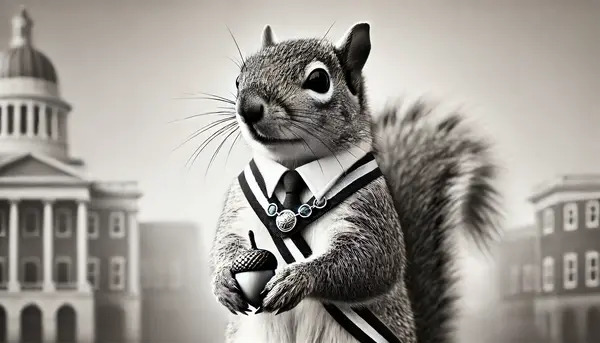

Local Squirrel Elected Mayor, Promises More Acorns for All
On Sept 24 2024 by Penny Quickquill
In an unexpected turn of events, a charismatic squirrel named Oliver Scrufftail has been elected as the new mayor of Woodland Town. Known for his impressive acorn collection and daring tree-jumping skills, Nutty ran on a platform of "More Acorns, Less Fuss." His first act as mayor? Installing squirrel-friendly bridges across all main roads to ensure safe crossings. Local birds are already chirping about a potential alliance. "It’s about time we had a leader who truly understands the needs of us little guys," said Mr. Wiggletail, a prominent rabbit in the community.
Read more